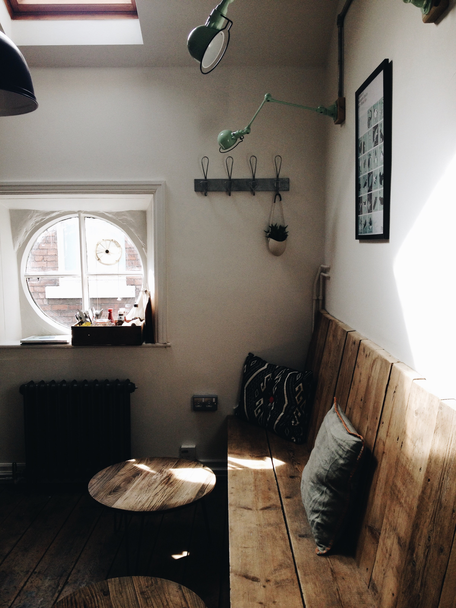
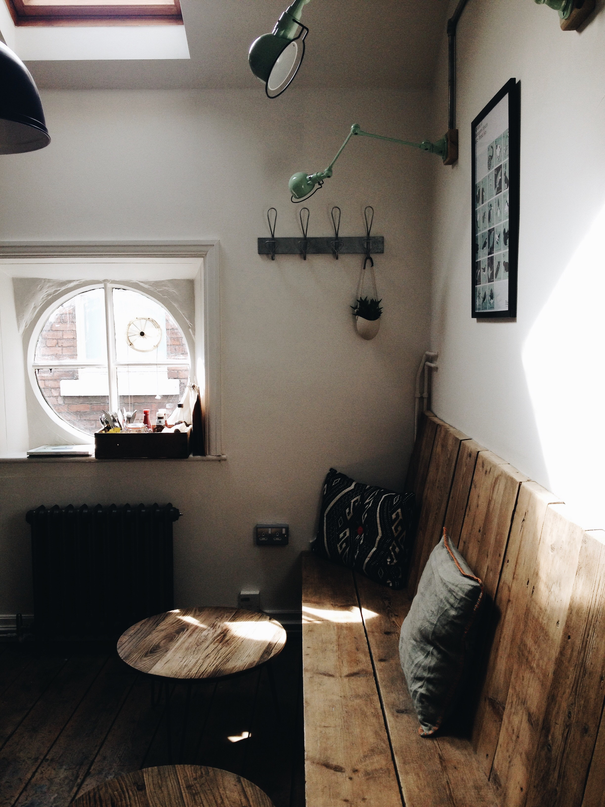
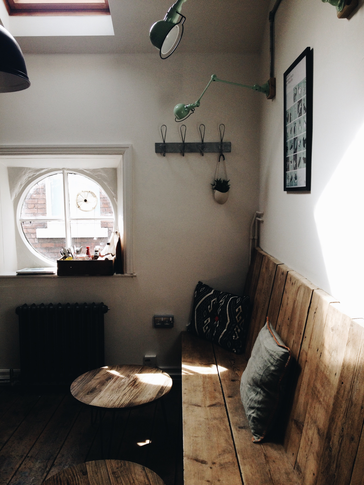

🏠
we build tinyr spaces
✨
you dream
we'll turn your dream into a tinyr space
📝
we design
commision your tinyr space
🏗️
tinyr builds
then we'll build your tinyr space
 contact tinyr space

contact tinyr space

we'll turn your dream into a tinyr space
commision your tinyr space
then we'll build your tinyr space
contact tinyr space
